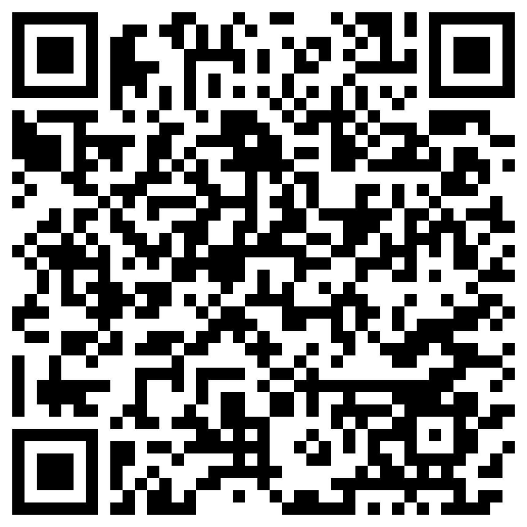

Meetups are once a month, but the radios are on all the time.
Our informal simplex frequency. No repeater needed — just tune in and call out.
147.555 MHz
Join our Meshtastic mesh network. Scan the QR code with the Meshtastic app to add the CORE channel to your node.

We're on Reticulum as well and you can connect over the Internet or over the air. New to Reticulum? You can learn more about Reticulum at reticulum.network.